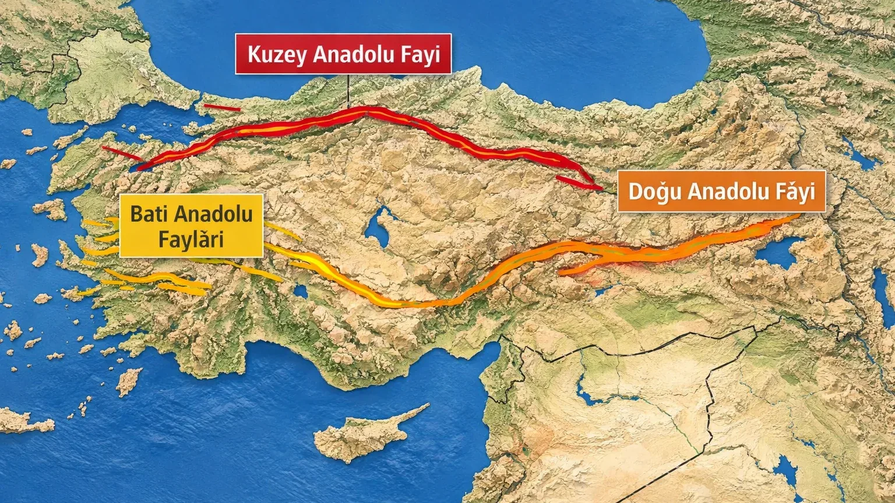

Türkiye Fay Hatları Haritası 2026 – KAF, DAF ve BAF
Türkiye'nin jeolojik yapısı üç büyük fay hattı tarafından şekillendiriliyor. Bu üç hat — Kuzey Anadolu Fay Hattı (KAF), Doğu Anadolu Fay Hattı (DAF) ve Batı Anadolu Fay Hattı (BAF) — ülkenin %95'ini aktif deprem kuşağına çeviriyor.
Kuzey Anadolu Fay Hattı (KAF)
1.200 km uzunluğundaki KAF, Türkiye'nin en uzun ve en aktif fay hattıdır. Bingöl'den başlayıp Gemlik Körfezi'ne kadar uzanır. 1939 Erzincan, 1999 Gölcük ve 1999 Düzce depremleri bu hat üzerinde gerçekleşmiştir. Marmara Denizi altındaki kolu, olası İstanbul depremi senaryosunun ana odağıdır. İstanbul, Kocaeli, Sakarya, Bolu, Amasya, Tokat, Erzincan — hepsi bu hattın etki alanındadır.
Doğu Anadolu Fay Hattı (DAF)
580 km uzunluğunda, Karlıova'dan (Bingöl) Antakya'ya uzanan DAF, 2023 Kahramanmaraş depremleri (Mw 7.8 ve 7.6) ile tarihsel olarak en büyük yıkımı yaşayan hattır. Hatay, Kahramanmaraş, Malatya, Adıyaman, Gaziantep ve Elazığ bu hattın yakınındadır. DAF, KAF ile Karlıova'da birleşir — Türkiye'nin en riskli jeolojik noktası burasıdır.
Batı Anadolu Fay Hattı (BAF) ve Ege Grabenleri
BAF, tek bir hat olmak yerine birçok paralel grabenler (çöküntü) sistemidir. Gediz, Büyük Menderes ve Küçük Menderes grabenleri bu sisteme dahildir. İzmir, Aydın, Manisa, Denizli, Muğla, Uşak, Balıkesir — Ege'nin neredeyse tüm illeri bu yapı içindedir. 2020 İzmir-Samos depremi bu hatların aktivitesini hatırlattı.
Sizin Şehriniz Hangi Fay Hattına Yakın?
Bizim sitemizde 81 il için ayrı ayrı fay hattı risk profilini hazırladık. Tüm şehirlerin deprem sayfasına girerek şehrinizin jeolojik durumunu öğrenebilirsiniz. Risk seviyesi "Çok yüksek" olan illerde yaşıyorsanız DASK, deprem öncesi hazırlık ve deprem çantası bir seçenek değil, zorunluluktur.